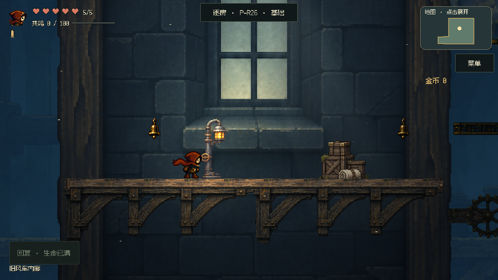
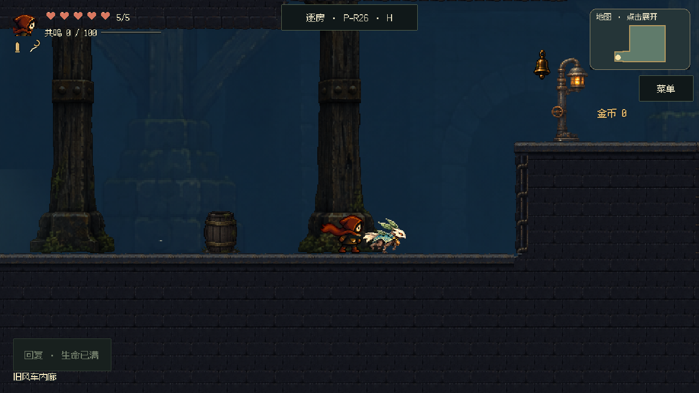
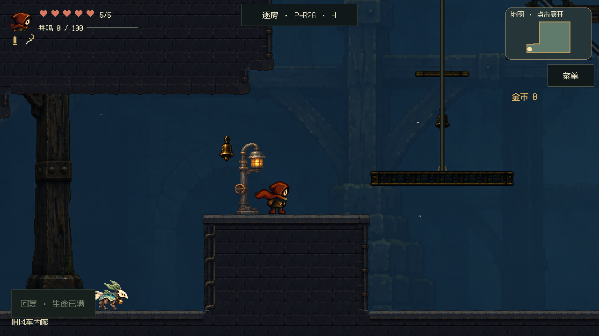
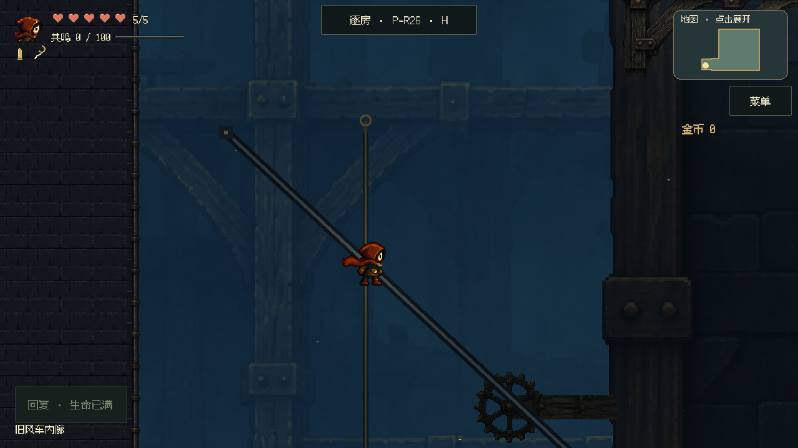
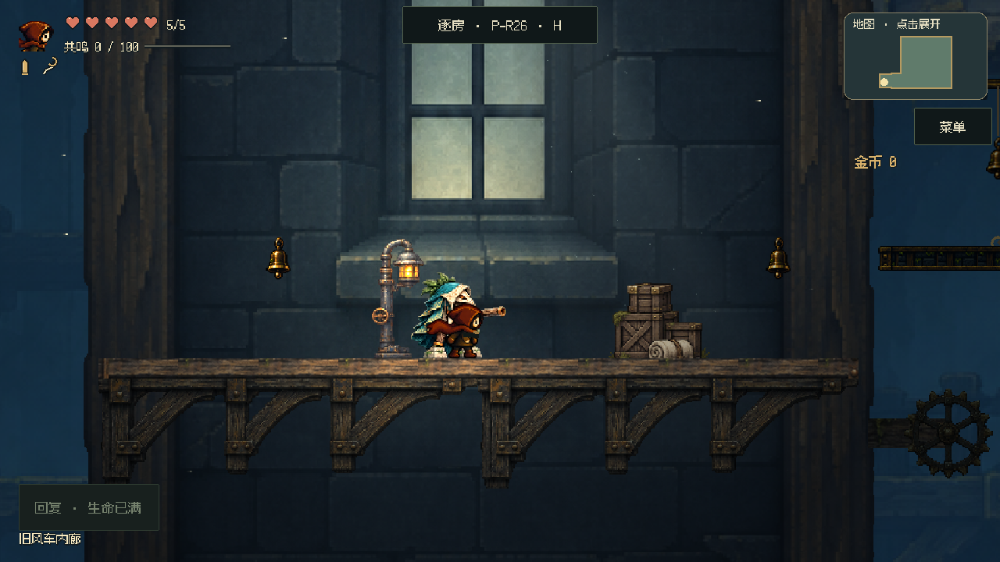
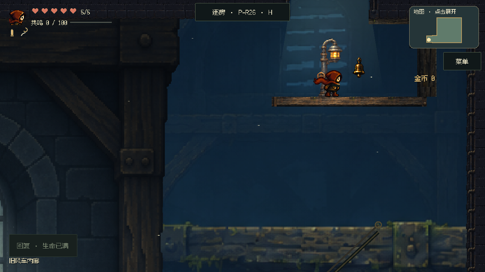
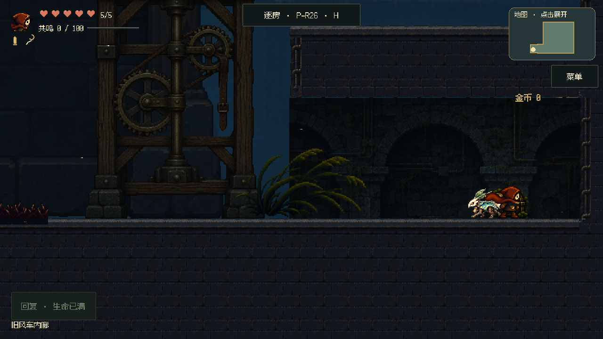
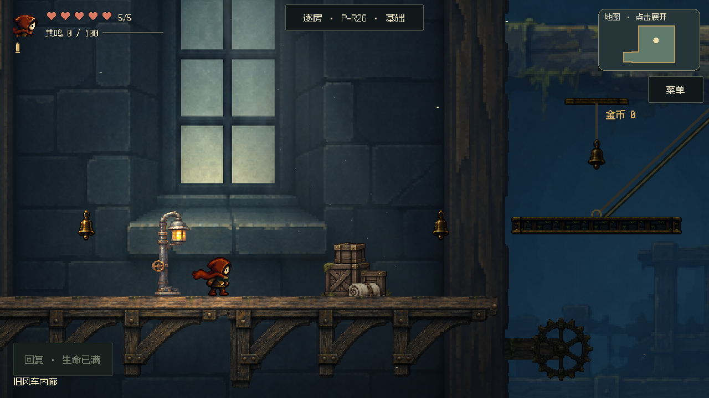

查看最新首段构图、动物居民和云层
此页保留前版证据。查看最新室外实验与隐藏室修正
失序之钟 · P26 旧风车内廊
让光、建筑与路线属于同一个空间
正式游戏内的单房实验 · 8dc33d83d895 · 待本轮美术审看
幽深、安静的风车内部。远梁架解释空间，窗间墙承接检修岸，三盏暖灯引出起乘、落点与出口。保留原角色、镜头和玩法布局。

构图先解决什么
空间：入口柱架 → 开放吊台井 → 窗边检修岸 → 上方真实出口。大结构贯穿镜头移动，主角动作带保持安静。
层次：冷色远梁架轻微视差；窗墙、托梁与灯具固定在世界坐标；少量遮挡有真实宿主。
氛围：窗光与暖灯都能找到来源，尘埃在光路中缓慢流动。撤下旧幕布墙、散放亮窗和压在主角背后的大装饰轮。
正常速度短片
使用正式控制器；局部起点与普通怪物隔离用于观察美术，不代表整房战斗验收。吊台片段从台上起录，预置启动状态；射铃与反冲另有实际动作回归。
入口行走与登岸
3.9 秒 · 319 KiB · 带游戏原声
下载这段短片
吊台上行与反冲换岸
8.8 秒 · 794 KiB · 带游戏原声
下载这段短片
窗光与浮尘
3.3 秒 · 207 KiB · 带游戏原声
下载这段短片
六处同位置取景
点按钮比较，包含入口、动作途中、落点、出口与暗室。静态定位保留房间怪物，部分画面人物可能与巡逻怪接近；不代表战斗站位。
1 · 入口门厅

2 · 第一吊台准备岸

3 · 吊台井中段

4 · 中央检修岸

5 · 上出口接收岸

6 · 下层暗室

窗光开关检查
同一固定机位：关闭窗光和光束，保留灯具与玩家柔光，检查亮区是否确实来自窗洞。

非美术场景字段与基线相同；双吊台动作、入口/恢复、灯位、附着与尘埃暂停检查已完成。其他房间美术未扩展，关卡审核平台未发布。实体手机帧时间及你的审美判断尚未验证。